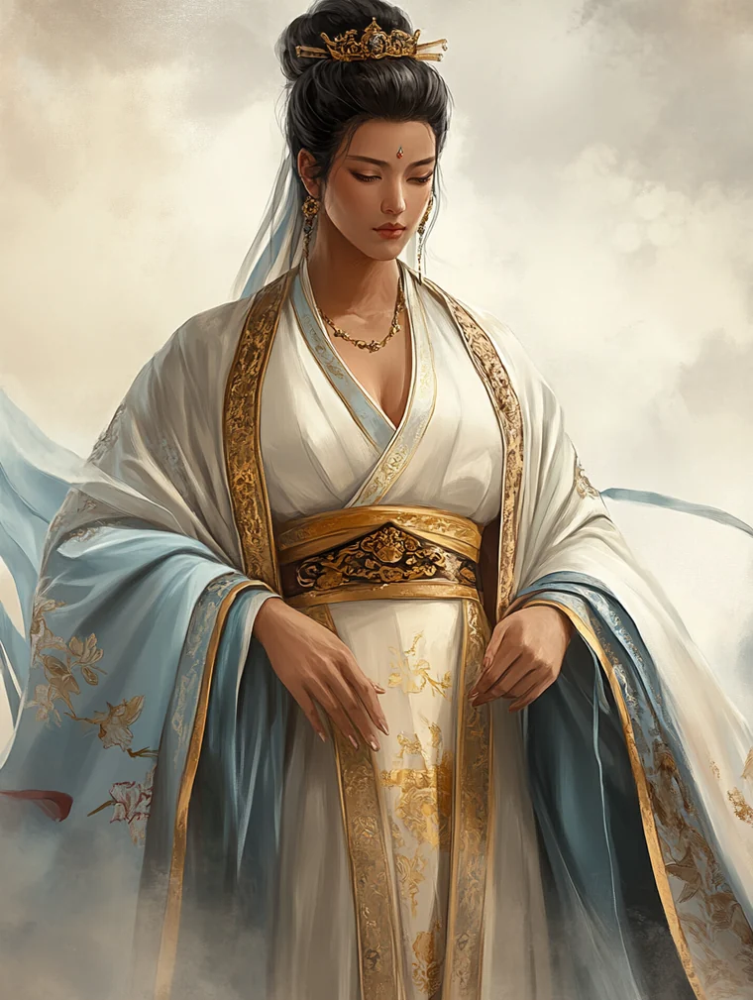

of Imperial Bloodline · Personal Advisor to the Imperial Envoy · Emerald Magistrate · Famously Successful · Paragon of Courtesy and of Courage

Doji Setsuna serves the Imperial order as Personal Advisor to Imperial Envoy Miya Misato and as Emerald Magistrate. She is a married woman of the Doji family, presently in her mid-twenties, of kuge standing with Imperial Bloodline. Her professional vocation is legal-administrative work in service to the throne.
Setsuna is in her mid-twenties. She is slight of build at about 5'4", finely-boned with soft hands, light skin warmed by an undertone of gold, and dark brown eyes set in a composed face. Her long black hair is worn in a high, elegant bun from which a few strands always escape — the one persistent imperfection in an otherwise immaculate presentation. She carries herself with a tall, deliberate poise that makes her seem larger than her frame. Her dress is consistently the finest in any party she travels with: refined Crane silks in pale blue and white, often with gold detailing, cut and worn to suggest understated harmlessness rather than display. Her station speaks for her; she does not need to.
She speaks with deliberate precision, choosing less ordinary words where specificity is required. Apparent misspeaking is often intentional. Under stress, she steps forward into situations she is ill-equipped for, believing her words might de-escalate. At high strife she grows curt and attempts increasingly improbable solutions. Her bushidō register is one of rigid acquiescence.
To ensure Imperial Envoy Miya Misato succeeds in brokering peace between the Lion and the Unicorn. Current giri
To innovate the trilateral agreement for Toshi Ranbo — for the Crane clan, for her grandmother, and to see to her husband's freedom. Current ninjō
Rule must bind, and if needed, contort. Foundational giri — service under Kitsuki Kāgi
Strictures too often interfere with a beautiful tale. Foundational ninjō — escape into literature, riding, and pillow-books
Air and Water dominate. Fire and Void, originally at 1 each, have both advanced to 2, correcting the deepest mechanical fragilities of the early build. Skill ranks and technique acquisition remain prioritised over further ring advancement, producing dice pools that rely on the skill die's superior distribution and on layered reroll mechanics.
| School | Doji Bureaucrat — Rank 3. School ability Procedure and Protocol: targets receiving strife from her social-approach checks suffer additional strife equal to school rank. |
| Title (invested) | Emerald Magistrate — full curriculum completed at creation. Provides Voice of Authority: once per session, social Scheme or Support checks target additional characters equal to her Glory rank. |
| Title (acquired) | Personal Advisor to Imperial Envoy Miya Misato — mechanically the Advisor title (Emerald Empire p. 249), renamed on the character sheet to reflect her specific assignment. Taken in-campaign for the +10 Status award. Zero XP invested; title ability Skilled Attendant never unlocked. Planned for abandonment once her advisory work with Miya Misato concludes, in order to free the title slot. |
| Title (planned) | Esteemed Negotiator (Courts of Stone) — to be assigned at the formal request of a Lion or Unicorn daimyō (or Kitsuki Kāgi, or the Imperial Envoy) for her service as treaty mediator. 34 XP to completion. Title ability Calming Words: once per scene as a Scheme and Support action, reduce strife of all characters in the scene by her Sentiment ranks. See §X for allocation plan. |
| Technique | Type | Function |
|---|---|---|
| Procedure and Protocol | School Ability | +School rank strife to targets of social Strife-inflicting checks |
| Voice of Authority | Title Ability | Once per session: expand social action targets by Glory rank |
| Beware the Smallest Mouse | Water Shūji | Reduces target vigilance ahead of future encounters |
| Well of Desire | Water Shūji | Gift-giving: forces target to forfeit glory to refuse, or reduces TN on next social check if accepted |
| Shallow Waters | Water Shūji | Learn target's desires and ninjō through conversation |
| Stonewall Tactics | Earth Shūji | Raise TN of target's actions that do not involve her |
| Civility Foremost | Earth Shūji | Claims protection for an individual by rights of honor; targets must forfeit honor and suffer strife to attack the protected person |
| The Wind Blows Both Ways | Air Shūji | Amplify or diminish target's next glory award or stake |
| Hidden in Smoke | Air Shūji | Once per scene: conceal true goal; observers perceive a false narrative goal |
| Treaty Signing | Fire Ritual | Bind participants on 10 honor each; structural enforcement of agreement |
| Courtier's Resolve | Void Shūji | Once per scene: 1 Void to remove strife equal to glory rank |
| Coiling Serpent Style | Void Kata | Disarm or immobilise via snaring weapon (incl. unarmed) |
| Open-Hand Style | Void Kata | Force opponent's stance change via unarmed snaring |
| Crescent Moon Style | Void Kata | Counter-strike during Guard action |
| Type | Trait |
|---|---|
| Distinction | Famously Successful (Glory 65+ acquisition) |
| Distinction | Paragon of Courtesy |
| Distinction | Paragon of Courage |
| Distinction | Legal Scholarship |
| Distinction | Blessed Lineage (Void) — the mechanical expression of her Imperial Bloodline. Characters of Status 50 or higher recognise that harming her risks loss of prestige and so do not choose to kill her as a first option, even if she is a political obstacle they would otherwise eliminate. On checks where her esteemed lineage is a benefit, she may reroll up to two dice. |
| Adversity | Scorn of Kakita — gained from the Shirogome tax ruling; standing institutional grudge among the Kakita family |
| Adversity | Haunting — by the ghost of her grandmother, who married into the Crane from the Matsu |
| Anxiety | Dark Secret (Abortion) — mechanically tracked since the procedure |
| Anxiety | Fear of Death — terrified of dying; courage operates against this |
| Passion | Wordplay — at peace when writing poetry, reading pillow-books, riding |
Her father Doji Masateru taught her to wield the law like a sword: a single correct argument, like a single cut, should be fatal. The Kakita parsimony — the duel decided in one stroke — operates in every register of her work. Each major institutional move is one document, one ruling, one ask, prepared exhaustively in advance and executed once. Extended engagement is treated as failure of preparation. Multiple exchanges are aesthetic and operational defects.
She is least in danger when most apparently exposed. Her institutional protections — Status, Glory, Imperial Bloodline, magistrate authority — activate only when her identity is legible to observers. Hidden behind walls and bodyguards she is operationally vulnerable; fully exposed in ceremonial register she is structurally protected, because harming her is prohibitively expensive to any plausible attacker. Therefore she sets the terms of her own exposure rather than waiting for blades to strike.
Her Paragon of Courtesy is a doctrinal commitment that excludes kindness as a register. Courtesy is for the room; kindness is for the recipient. Her courtesy operates outward toward all observers, performing perfect correctness regardless of her actual disposition. Her care travels through action and never through manner. Recipients receive correct treatment; only the few she has chosen receive the substance of her care, and that care is delivered structurally rather than warmly.
From her first ruling against the Kakita provincial daimyō at Shirogome onward, she has consistently chosen the Imperial framework over Crane Clan interest where the two diverge. Her rulings produce Imperial gains at clan-level expense by finding the principle that elevates Imperial position above clan claims. The pattern is professional, conscious, and has accumulated specific institutional enemies.
If you don't know the truth, you can't lie about it. Trusted intimates are distributed across minimum-viable circles by function. Different parties carry different fragments of her interior life. The complete picture exists only in her.
Every significant action serves more than one purpose simultaneously. The invoice letter to the Scorpion lord performed institutional capture, financial reallocation, frame inversion, and historical revision in a single document. The maternal investment in Mia is genuine care, operational instrument, political career-building, atonement, and Imperial duty all at once. She does not separate her motives because the doctrine forbids the separation.
| Father | The legal blade. Trained her in the single-cut doctrine of Imperial law. Emotionally distant. Source of her professional method. |
| Mother | The literary transmutation. Arranged her marriage; a year in, advised obliquely that a daughter of the Doji turns infidelities into poetry. Source of her parallel-life framework. |
| Bayushi Tomono | The Scorpion courtier who taught her to exploit Imperial law and weaponise harmlessness. One of three people whose approval she cares about. Currently off-stage. |
| Asahina Shigehiro | Her former lord at Shirogome. Shugenja-trained city administrator who employed her as legal counsel. One of three whose approval matters. |
| Kitsuki Kāgi | Her current Emerald Magistrate superior. Recruited her after the Kakita tax loophole. One of three whose approval matters. |
The Kakita single-cut philosophy is paternal pedagogy made operational across her career. The pillow-book channel and the framework of parallel intimate life are maternal instruction made domestic infrastructure. The Affect of Harmlessness and the Imperial-law exploitation framework are Tomono's teaching. Her doctrine is not original synthesis but inherited instrumentation, refined in her own practice across years.
Her Fear of Death is genuine and structural. She is terrified of dying and her courage operates against the fear, not in its absence. The Paragon of Courage distinction recognises this directly: the bushidō tenet requires fear as precondition, and her demonstrated actions under fear have earned the formal virtue. Her courage is operational rather than constitutional — given time to face death, she would shrink from it. The doctrine requires the absence of time for the bravery to hold.
| Member | Role & Function |
|---|---|
| Bayushi Monbon | Yojimbo (Scorpion). Assigned to Setsuna as punishment duty by his Scorpion lord, originally without right of seppuku. Fired by Setsuna at the Ifrit incident and reclaimed at the Midnight Treaty; his ransom invoiced back to his lord. Currently in functional partnership with her. Carries a bound Lady of Decay that grows more visible over time. |
| Aika | Personal attendant, former geisha (Crane). Manages hair, dress, and intimate chamber care. Geisha-trained discretion. One of the two senior female witnesses to the pregnancy and procedure. |
| Ishika | Lady's maid and personal attendant (Crane). Quiet, middle-aged, motherly. Maternal-continuity register. The second senior female witness to the pregnancy and procedure. |
| Otoya | Male Crane scribe and legal assistant. Encyclopedic knowledge of Imperial law. Setsuna's working partner for document preparation and legal research. |
| Jiro | Horse attendant (Unicorn). Cares for Kogarashi. |
| Kogarashi | White Utaku steed with silver mane and tail. Lean, swift, always poised. Wedding gift from the Shinjo family. The single object of Setsuna's unguarded affection. |
Aika and Ishika know Setsuna was pregnant and underwent termination. Neither has ever been formally asked for confidentiality. The trust is presumed at the deepest structural level: any request for the silence would itself constitute the breach. They serve under the knowledge that disclosure would carry capital exposure to all parties, including themselves. They have continued to serve.
Approximately four months before the campaign began, Setsuna conceived in Otosan Uchi by an unnamed Imperial-family man during a period when her husband was on campaign in Unicorn lands. She carried the pregnancy through the Loyalty Castle mission and subsequent early sessions, considering carrying to term seriously before electing termination. The procedure was conducted in session by Midori; Kazume provided discreet logistical support.
| Person | What they know |
|---|---|
| Midori | Procedure, medical detail. Not the father's identity. |
| Kazume | Existence of pregnancy and procedure (deduced via Skullduggery). Not the father's identity. |
| Aika | Witnessed bodily evidence of pregnancy and procedure. Not the father's identity. |
| Ishika | Witnessed bodily evidence of pregnancy and procedure. Not the father's identity. |
| The lover | Nothing. He has never known she was pregnant. |
| Harunobu | Nothing, and must never know. Learning of her infidelity would destroy him. |
| Setsuna's mother | Not consulted on this matter. Whether she suspects is unknown. |
| The wider world | Nothing. A false rumour of a liaison with the Governor of the City of the Rich Frog operates as decoy noise. |
The procedure produced a severe Void ring wound. The wound increases TNs for Void-stance and Void-skill checks rather than reducing pool capacity. It has persisted across the entire arc of the campaign, partially healed but not fully restored. It represents both the procedural cost and the integrated weight of the secret as carried in her body.
Her doctrine maintains a strict seal on her interior life from peer-level court society. Four channels operate outside that seal, each in an asymmetric relationship that forecloses the kind of exposure her position cannot tolerate.
The Utaku steed received as wedding gift. The one object of her unguarded affection. Channel for kinetic warmth. Riding is simultaneously personal pleasure and political instrument; she does not separate the two. Kogarashi's visible identification as Setsuna's mount carries diplomatic weight in Unicorn-facing contexts.
Particularly the novels of Hano no Ami. Channel for the romantic and erotic registers her own life forecloses. Vicarious literary access to the kinds of relationship her marriage and position do not permit. Her familiarity with Hano no Ami also has operational value; the novels have plot-relevant connections to investigations she has worked.
The two senior female household attendants. Channel for bodily care (Aika) and maternal continuity (Ishika). Both witness her interior life without ever narrating it. The silent trust is the form of the relationship; any articulation would constitute a breach.
The sole peer-level intimate with whom she has been visibly unmasked. The relationship operates at professional and operational registers in public; in private (after the abortion procedure) she has cried in front of Midori without doctrinal cost. Midori's shugenja presence also unlocked the grandmother's haunting from imperceptible to legible.
Near-term XP roadmap, organised into two phases. Phase 1 pushes School Rank 4 with no active title (the Advisor title currently held on her sheet is abandoned without completion once her work with Miya Misato concludes; zero XP was ever invested in it). Phase 2 opens upon the narrative assignment of the Esteemed Negotiator title (Courts of Stone, 34 XP) at a Lion or Unicorn daimyō's formal request for her as treaty mediator. From that point, each new purchase is allocated to either school-rank progress or title progress — never both.
Per Core Rulebook p. 305: each XP purchase may be allocated to the active title (full value for listed advancements, half value rounded up for non-listed), or to the current school rank, but not to both. XP already spent before a title was assigned cannot be retroactively reallocated. The matrix below therefore distinguishes purchases by which budget they should serve at the moment of purchase.
Standard cycle. All purchases allocate to school rank. ~24 curriculum XP toward the 32 needed for Rank 4.
| # | Purchase | XP | Notes |
|---|---|---|---|
| 1 | Earth 2 → 3 | 9 | Out-of-curriculum ring (Doji Bureaucrat's ring bonus is the chargen +1 Earth, +1 Water; rings are not in per-rank curriculum). Half value: 5 XP toward Rank 4. Structural rebalance; powers Stonewall, Civility Foremost, Composure, Endurance, and all Earth shūji including the title's R1-3 group. |
| 2 | Lady Doji's DecreeR2 Void Shūji, Crane-only | 6 | Out-of-curriculum (3 × rank). Half value: 3 XP toward Rank 4. Once-per-session immunity to Attack actions; Void (op)(op) extends to Scheme. |
| 3 | CadenceR1 Air Shūji | 3 | In-curriculum (R3 Air Shūji group). Full 3 XP toward Rank 4. Live channel to Midori and Kazume for parallel meaning under any Social (Air) check. |
| 4 | Composition 2 → 3 | 6 | Out-of-curriculum at R3. Half value: 3 XP toward Rank 4. Directly powers Treaty Signing's first check; single-cut writing. |
| 5 | Culture 2 → 3 | 6 | In-curriculum at R3. Full 6 XP toward Rank 4. (Also listed on the Esteemed Negotiator table; if the title arrives before this is purchased, the allocation choice is forced — see Phase 2.) Court reading and Tea Ceremony target expansion. |
| 6 | Command 1 → 2 | 4 | In-curriculum at R3 (Social Skills group); also R4 (named skill) and R5. Full 4 XP toward Rank 4. Closes the cycle. |
| Phase 1 subtotal | 34 | ~24 curriculum XP toward Rank 4 (32 needed) |
Mid-arc, a Status-50+ figure formally requests her as treaty mediator: Lion or Unicorn daimyō, Kitsuki Kāgi as her magistrate superior, or Miya Misato's uncle the Imperial Envoy. Esteemed Negotiator is assigned. Glory +10 to a minimum of 65 (locks her glory floor at 65; any deferred Spear-Forest glory above that snaps in here). Title ability Calming Words: once per scene as Scheme and Support, reduce strife of all characters in the scene by her Sentiment ranks. The advancement table is Social Skills group · Culture · Government · Sentiment · Rank 1-3 Earth Shūji group · The Ties That Bind (ritual) · Treaty Signing (ritual, already owned and therefore inert).
From this point forward, every purchase has an explicit allocation. Bold entries route to the title; the remainder continue Rank 4 (or Rank 5) school progress.
| # | Purchase | XP | Notes |
|---|---|---|---|
| 7 | Honest AssessmentR1 Earth Shūji · allocate to title | 3 | Out-of-school-curriculum at R3 and R4. In-title-curriculum (Rank 1-3 Earth Shūji group). Full 3 XP toward title (vs. half value if allocated to school). Mia and Monbon enabler; Earth 3 amplifies. |
| 8 | Weight of DutyR1 Earth Shūji · allocate to title | 3 | Same routing as priority 7. Full 3 XP toward title. Giri-reader complement to Shallow Waters; combines with Honest Assessment as a paired interrogation toolkit. |
| 9 | The Ties That BindRitual · allocate to title | 3 | In-title-curriculum (named). Full 3 XP toward title. Ritual binding complement to Treaty Signing; thematic core of the negotiator's toolkit. |
| 10 | Sentiment 2 → 3Allocate to title | 6 | In-title-curriculum (named skill). Full 6 XP toward title. Also directly scales Calming Words (which removes strife equal to Sentiment ranks). Out-of-curriculum at school R4 (school R4 skills are Command, Meditation, Tactics). |
| 11 | Government 3 → 4Allocate to title | 8 | In-title-curriculum (named skill). Full 8 XP toward title. Out-of-curriculum at school R4. Core legal-procedure skill; underpins every magistrate check and the Imperial-framework doctrine. |
| 12 | An R2 or R3 Earth ShūjiAllocate to title | 3 | Specific shūji chosen at the time of purchase based on emerging needs (e.g. Truth Burns through Lies, Ebb and Flow, or another in-group option). In-title-curriculum (R1-3 Earth Shūji group). Full 3 XP. Completes the title at exactly 34 XP. |
| Phase 2 title subtotal | 26 | + 5 XP from priority 1 (Earth ring, half-value) + 3 XP from priority 4 alternate route if reallocated = up to 34 XP. Title ability Calming Words unlocks on completion. |
Earth ring 2→3 (priority 1) can be retroactively considered for title allocation only if purchased after the title assignment; if already bought during Phase 1, its 9 XP has been spent and cannot be reallocated. Per the rule, the title arithmetic is forward-looking from the moment of assignment.
| # | Purchase | XP | Notes |
|---|---|---|---|
| D1 | Fire 2 → 3 | 9 | Out-of-curriculum for both school and title. Half value: 5 XP. Slow payoff; shores up the Famously Successful (Fire) reroll. Deferred to Phase 3 (post-title-completion) unless a Fire-pressured scene forces the issue. |
| D2 | Lover Bond (Harunobu) → Rank 2 | 4 | No curriculum or title contribution. Time to a session featuring Harunobu directly. |
| D3 | Lover Bond (Harunobu) → Rank 3 | 6 | Flashback scene mechanic. Defer until after title completion and Rank 4 transition. |
Phase 1 contributes ~24 curriculum XP toward Rank 4. Combined with what she has already accumulated at Rank 3 (Courtesy 2→3, Hidden in Smoke, Sentiment 1→2, &c.), she likely advances to Rank 4 partway through or at the end of Phase 1. The Esteemed Negotiator assignment is timed to land at roughly the same moment — the treaty arc is the narrative trigger for both.
Now her explicit ninjō: a trilateral settlement returning Toshi Ranbo to Crane administration while binding the Lion and Unicorn into stable peace. The treaty arranges Emika's marriage into the Matsu family to satisfy the grandmother's restoration demand, secures Harunobu's freedom through the prisoner exchange clauses, and opens Crane–Unicorn trade. Its legal framework will be Imperial-grounded, consistent with her career-long doctrine of finding Imperial principle in inter-clan disputes.
| Rank | Capability | Strategic Function |
|---|---|---|
| Rank 5 | Formal Tea Ceremony | Ritual binding of agreements at the ceremonial register. |
| Rank 6 | Post Facto (Mastery) | Once per session: reveal a legal precedent that retroactively justifies her own or her allies' actions. The loophole-finder's instinct institutionalised as a permanent capability. |
| Title | Capability | Strategic Function |
|---|---|---|
| Esteemed Negotiator | Calming Words + The Ties That Bind | Strife reduction across the entire room as a Scheme and Support action — the doctrinal inverse of Procedure and Protocol's strife addition. Where the school weaponises strife as pressure, the title clears strife to land fragile agreements. Paired with The Ties That Bind, the title is the operational toolkit of the treaty arc itself. |
Setsuna has accumulated a population of clan-level operators with specific grievances. The Kakita daimyō Noritomo and his allies in the Magistrates. The Lion and Unicorn families who lost the Snow Plains mine ruling. The Scorpion lord she invoiced for Monbon's ransom. Mirumoto Kyou and Kakita Yoshitada among her fellow Magistrates. The eventual signing of the Toshi Ranbo treaty will focus and intensify these grievances; her endgame defensive capabilities are being built specifically to handle the convergence.
Setsuna should die unexpectedly and suddenly, so that she does not have a chance to shrink from it or overthink it. It is unlikely that her destiny is fulfilled in this life.
The player walked in believing the character would not complete her work. The Toshi Ranbo project, the grandmother's full restoration, the doctrine's full execution are generational tasks. What she completes will be partial. What she leaves unfinished will be substantial. The doctrine is the framework for working well under that condition.